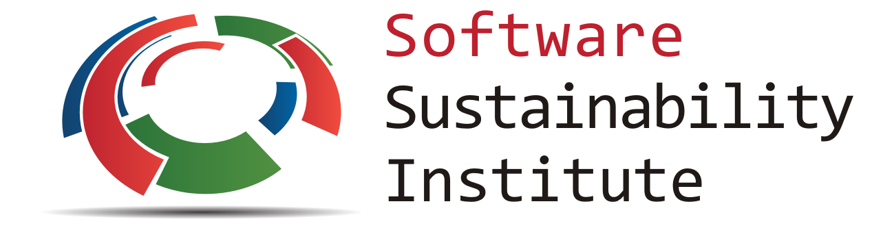
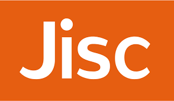

This work is published under a Creative Commons Attribution 4.0 International License (CC BY 4.0), https://creativecommons.org/licenses/by/4.0/.
This work is published under a Creative Commons Attribution 4.0 International License (CC BY 4.0), https://creativecommons.org/licenses/by/4.0/.|  |  |
Version 1.0
There are myriad digital repositories where you can deposit your research software so that the exact versions of your software upon which you have published your research results are retained and remain available for future inspection and use, both by yourself and by other researchers. These digital repositories may be provided by your institution, recommended, or mandated, by funders or publishers, or provided as a service to research communities by third-party organisations. This guide provides advice on choosing where to deposit your software.
Where to deposit software
This guide is one of a series of guides on software deposit, written by The Software Sustainability Institute 1, funded by Jisc 2. For an overview of the series, see Michael Jackson (ed.) (07 August 2018). Software Deposit: Guidance for Researchers (Version 1.0). Zenodo. doi:10.5281/zenodo.1327310. Online: https://softwaresaved.github.io/software-deposit-guidance/SoftwareDepositGuidance.html.
There are many locations where you can, but should not, deposit your software for archival and reuse.
Your desktop, laptop or a USB stick: these can be easily broken or lost. They make it more difficult for researchers to access your deposit, since they have to email you, which then requires you to search through these devices every time you receive such a request.
A personal, departmental or project web site: while these allow others to access your software without contacting you directly, they could be deleted if you leave your current employer or after your project comes to an end. Anyone following links to your software cited in your papers will then be met with the dreaded "404 Page Not Found" error.
Repository hosting services: services such as GitHub 3, BitBucket 4, GitLab 5, CCPForge 6, or Microsoft Visual Studio Team Services 7 that host source code repositories are not well suited for archiving software 8. They don't create unique persistent digital identifiers for your repositories, instead you need to use URLs. Your repositories could later be deleted by yourself, breaking links to these URLs, or the repository hosting service may go out of business. It is these limitations that motivated the development of tools such as the figshare-GitHub integration 9 and Zenodo-GitHub integration 10 that support the automated deposit of software within repository hosting services into digital repositories.
You want to deposit your software in a place where other researchers can access it for the long-term, in a place that will exist beyond the timescale of your current project or employment at a specific institution and, ideally, in a place that will give you a persistent digital identifier.
There are many choices as to a digital repository to use for depositing software.
Institutional digital repositories are provided by institutions for the deposit of research objects, including software, that are created by their staff, typically to showcase their research. Even if you leave the institution, your research will remain in the repository. Examples which support software deposits include the University of Edinburgh DataShare 11, UCL Discovery 12 and the University of Sheffield figshare 13 (an example of an institution-specific deployment of the figshare digital repository platform).
Funder- or publisher- mandated or recommended digital repositories are those that funders or publishers recommend, or require you to use. For example, Wellcome Open Research require that software written by a paper's authors be deposited and recommend the use of Zenodo for archived software 14, so its title, digital object identifier (DOI) 15 and licence can be cited. Springer Nature's BioMed Central 16 series of journals, requires both a link to a live version of the software (e.g. on GitHub) but also to an archived version with a DOI, for which Zenodo is recommended 17.
Community recommended digital repositories are those that may be recommended for, or popular within, a specific research community.
General purpose or open-to-all digital repositories are those that are available for use by any researchers in any community. The two most well-known are Zenodo 18 and figshare 19.
Regardless of where you deposit your software, you may also want to consider Software Heritage 20, an international initiative to provide a universal archive and reference system for all software. Software can be explicitly deposited into the Software Heritage archive 21 via the Hal-Inria digital repository 22 which is open to use by all researchers.
There can be many factors that can constrain your choice of digital repository. Ask yourself, and your fellow stakeholders, the following questions.
Persistent digital identifiers 23 are identifiers that are provided under the assumption that they, and the digital objects they refer to, will remain available long term. Examples of unique persistent digital identifiers include DOIs and ARKs 24. The use of persistent digital identifiers for research outputs, including papers, data and software, and the use of these for citation purposes, is becoming prevalent in research.
Digital repositories may have constraints on the size of deposits they accept. For example, Zenodo has a limit of 50 GB 25 and the University of Edinburgh DataShare has a limit of 20 GB for deposits done via a browser and 100 GB otherwise 26.
If both a funder and publisher mandate two different digital repositories you could deposit within them both, or discuss with each to see if they will agree for you to use one only, even if it is not the one they mandate.
These can include 27 28 29 terms and conditions of use; availability of the service (e.g. does the service regularly go down for updates or does it run 24/7); how resilient the service is to breakdowns; where deposits are stored; how they are stored; what are the plans for stored deposits if the repository goes out of business; how secure the storage is; how regularly it is backed up; how long backups are kept for; and what disaster recovery plans are in place. Knowing the quality of service can help you judge whether your deposit will be available to others, and yourself, even in the face of disaster. It also allows you, and your institution, to develop contingency plans should such drastic circumstances arise.
You want to know that the digital repository will host your deposit for as long as you need it too, not just 6 months or so. The policies or terms and conditions of the digital repository should state this. For example, Zenodo states that their lifetime is currently 20 years and figshare guarantees 10 years of persistent availability.
If a digital repository expects a one-off payment, to subsidise its hosting, you may be able to pay for this out of your project budget or your institution may pay this for you. It is recommended that you avoid any digital repository that expects a regular fee for the duration for which they hold the deposit, since it would most likely be unsustainable for your institution to commit to ever-increasing fees over a long term. There are many free digital repositories available.
The digital repository may be accredited or certified by an independent agency that reviews digital repositories according to various criteria related to its policies and processes. The presence of an accreditation or certification may provide you with an additional degree of confidence that the digital repository meets your requirements. For example, the Data Seal of Approval 30 can be awarded to digital repositories who satisfy a set of quality guidelines 31 relating to how they manage, preserve and make available the deposits they hold. The presence of a Data Seal of Approval could give you additional confidence that a digital repository is suitable for holding your deposit.
If you work for a college or university, you may have a research exploitation office that can advise you on which digital repository to use and which might best fit your requirements. Your local research data managers as well as collaborators, funders, publishers or researchers in your community may also be able to advise you and make suggestions or recommendations.
re3data.org, https://www.re3data.org/is a global registry of research data repositories. It supports searching for digital repositories by country, subject and content types (which includes various types of data, software applications and source code).
Please cite as: Michael Jackson (ed.) (07 August 2018). Software Deposit: Where to deposit software (Version 1.0). Zenodo. doi:10.5281/zenodo.1327329. Online: https://softwaresaved.github.io/software-deposit-guidance/WhereToDepositSoftware.html.
This work is published under a Creative Commons Attribution 4.0 International License (CC BY 4.0), https://creativecommons.org/licenses/by/4.0/.
The Software Sustainability Institute, https://www.software.ac.uk.↩
Jisc, https://www.jisc.ac.uk.↩
GitHub, https://github.com/.↩
BitBucket, https://bitbucket.com/.↩
GitLab, https://gitlab.com.↩
CCPForge, https://ccpforge.cse.rl.ac.uk/gf/.↩
Microsoft Visual Studio Team Services, https://www.visualstudio.com/team-services/.↩
Brown, C.T. (2016) "You can make GitHub repositories archival by using Zenodo or figshare!", 16 November 2016, http://ivory.idyll.org/blog/2016-using-zenodo-to-archive-github.html.↩
"How to connect figshare with your GitHub account", figshare knowledge, https://knowledge.figshare.com/articles/item/how-to-connect-figshare-with-your-github-account-1.↩
"Making your code citable", GitHub Guides, https://guides.github.com/activities/citable-code/.↩
University of Edinburgh DataShare, https://datashare.is.ed.ac.uk.↩
UCL Discovery, http://discovery.ucl.ac.uk/.↩
The University of Sheffield figshare, https://sheffield.figshare.com/.↩
"Software & source code, Data Guidelines", Wellcome Open Research, https://wellcomeopenresearch.org/for-authors/data-guidelines.↩
Digital Object Identifier (DOI), https://www.doi.org/.↩
BioMed Central, https://www.biomedcentral.com.↩
"Software and code", BioMed Central, https://www.biomedcentral.com/getpublished/editorial-policies.↩
Zenodo, https://zenodo.org.↩
figshare, https://figshare.com.↩
Software Heritage, https://www.softwareheritage.org/.↩
Software Heritage archive, https://archive.softwareheritage.org/.↩
HAL-Inria, https://hal.inria.fr/.↩
Persistent digital identifiers, https://en.wikipedia.org/wiki/Persistent_identifier.↩
Archival Resource Key (ARK) J. Kunze and R. Rogers (2008) The ARK Identifier Scheme, California Digital Library and US National Library of Medicine, May 2008. https://escholarship.org/uc/item/9p9863nc.↩
"What are the size limits in Zenodo?", Zenodo, https://help.zenodo.org.↩
"Checklist for deposit", The University of Edinburgh, https://www.ed.ac.uk/information-services/research-support/research-data-service/sharing-preserving-data/data-repository/checklist.↩
"General Policies", Zenodo, http://about.zenodo.org/policies/.↩
"Our Policies", figshare, https://knowledge.figshare.com/articles/our-policies.↩
See, for example, "Service level definition", The University of Edinburgh, https://www.ed.ac.uk/information-services/research-support/research-data-service/sharing-preserving-data/data-repository/service-policies/service-level-definition.↩
Data Seal of Approval, https://www.datasealofapproval.org/en/.↩
"The Core Trustworthy Data Repository Requirements", Data Seal of Approval, https://www.datasealofapproval.org/en/information/requirements/.↩